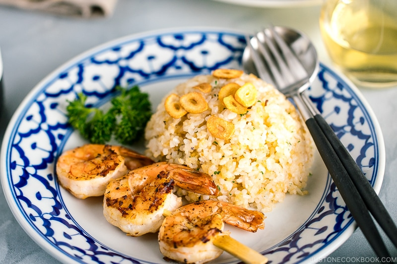

Garlic Fried Rice

Japanese Garlic Fried Rice, or what we call Garlic Rice (ガーリックライス) in Japan, reminds me of my college days when I used to cook it over and over. It was quick and easy and super flavorful. And really, there’s nothing better than a hot plate of garlicky fried rice!
With a simple salad and a protein on the side, it was a nice home-cooked meal that kept me going on those long study nights. Now, many years later, I’m still cooking this Japanese Garlic Fried Rice for my family and they love it just as much as I do.
What you will need
- Japanese short-grain rice
- Garlic
- Olive oil and butter
- Soy Sauce
- Salt and Pepper
- Parsley
- Your choice of side dish
Steps
- Make sure all your ingredients are ready to go. Fried rice cooks fast and having everything prepped makes it a lot easier.
- Add olive oil to a large skillet over medium-high heat and gently fry the thinly sliced garlic pieces until golden brown. Transfer to a dish lined with paper towel and keep the garlic infused oil in the pan.
- Add the minced garlic in the same pan and stir fry until golden brown and fragrant.
- Add in butter and swirl around to coat the pan, followed by the warmed steamed rice. Break the chunk of rice to separate. Once the garlic oil is coated with the rice, add the soy sauce and toss the fried rice.
- Season with salt and freshly ground black pepper. Taste and adjust accordingly.
- Lastly, add the chopped parsley and mix all together.
- To serve, place the garlic fried rice in a rice bowl, pressing gently to make sure there is no space in the bowl, and invert the rice on a serving plate.
I paired this garlic fried rice with grilled shrimp (included in the Recipe Card below), but you can also top it with fried eggs, grilled tofu, or baked chicken.
Back